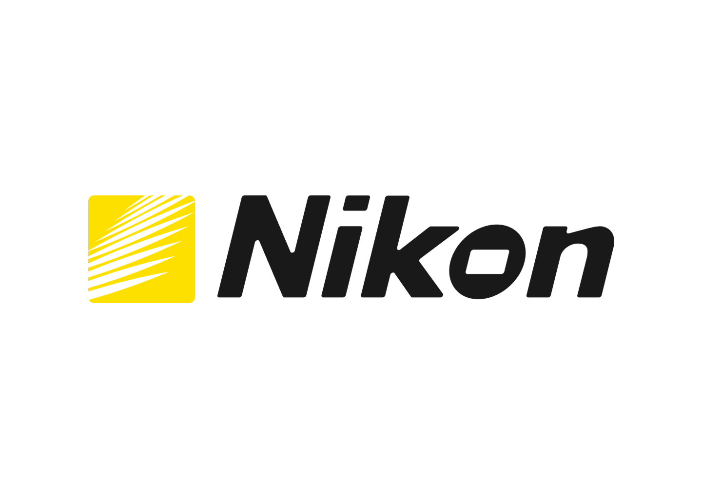
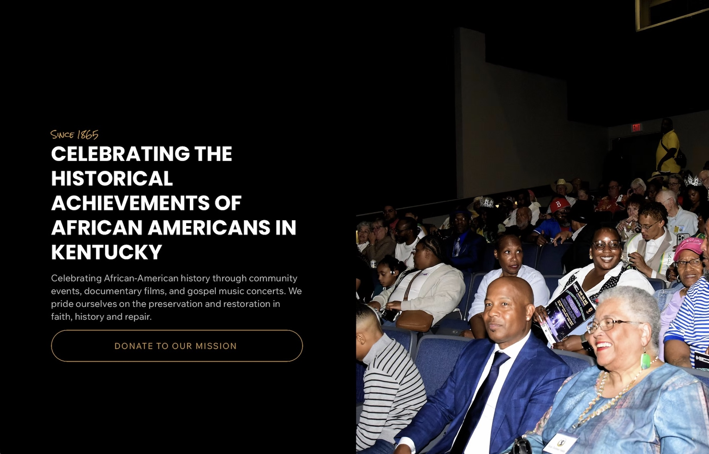
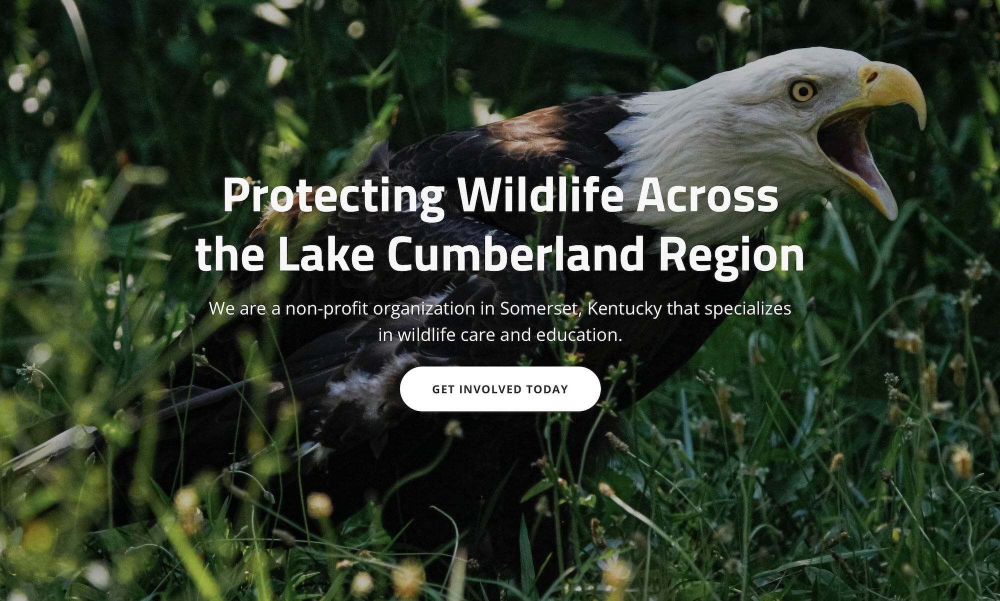

[ 1 / 4 ]

[ 2 / 4 ]
Nikon rebrand & website redesign concept


I Studied Website Design and Religion at Georgetown College
I Now Assist Multiple Non-Profit Organizations With Website Development
Contact: imorris0004 [at] gmail.com
[ 1 / 4 ]

[ 2 / 4 ]

